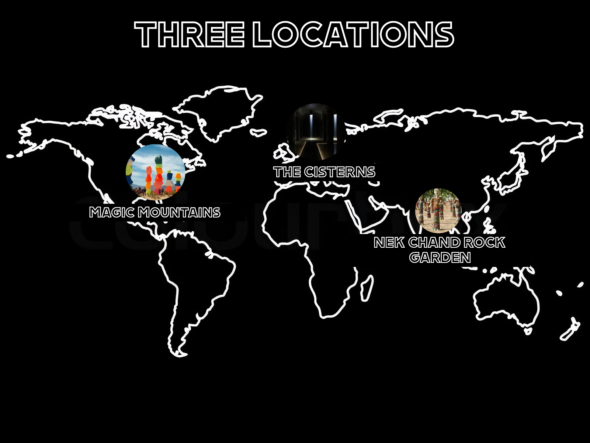
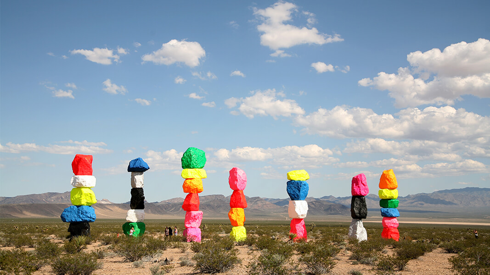
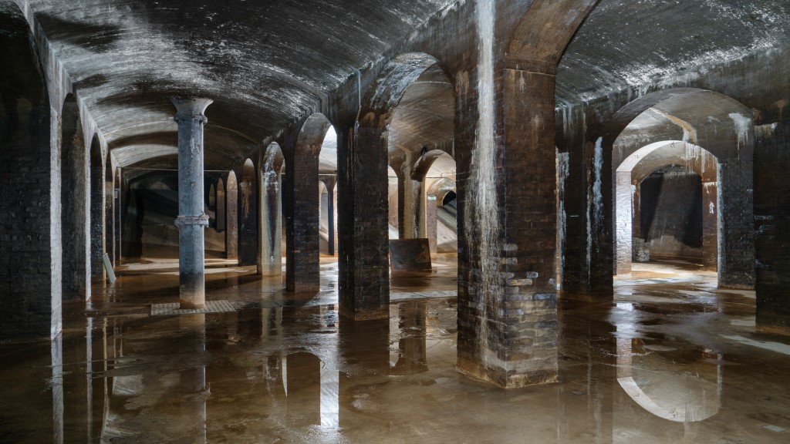
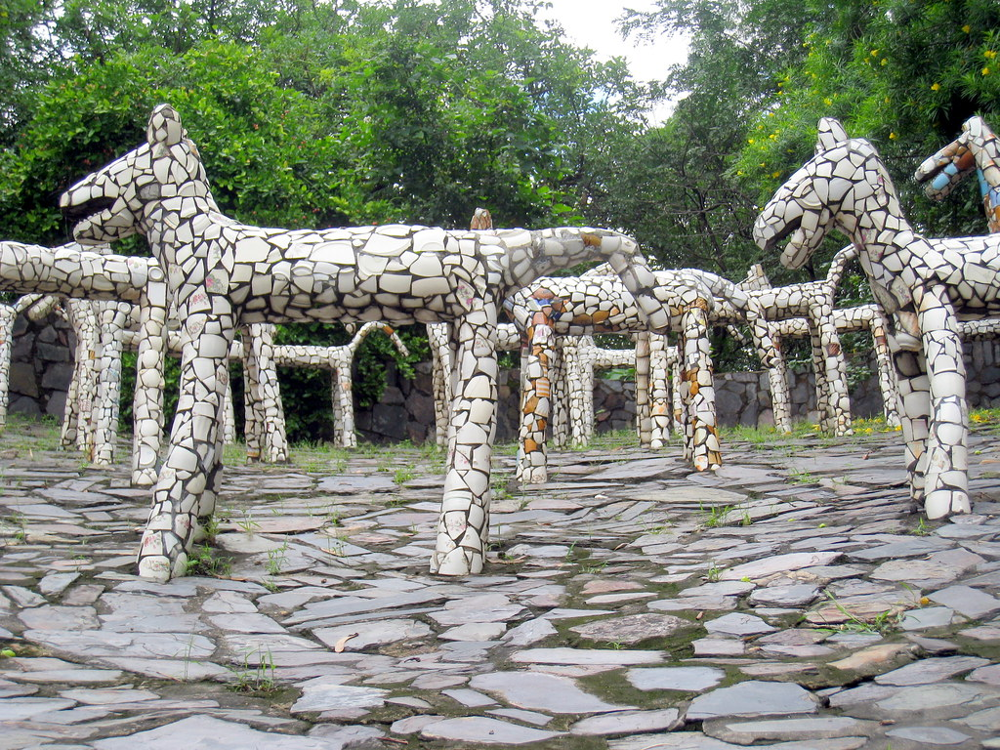

my mission
At City Spotlight, my responsibility is to search out and reveal the secret treasures that city countrysides hold, captivating you on a journey beyond the knowledgeable and well-walked courses. I am enthusiastic about surveying the lesser-known corners of places about the realm, finding the odd, and the missed.
My goal is to showcase the unnoticed beauty of city life that can easily blend into the fast pace. Beneath the chaos of urban living, there are beautiful hidden streets adorned with eye-catching street art, secret gardens offering momentary relief from the city’s pulse, and fascinating architectural masterpieces that tell their silent stories of a bygone era. I just want to draw attention to these gems in the city and let them speak for themselves because they are often overlooked.
map
Welcome to City Spotlight, where we embark on a journey to explore the extraordinary within the ordinary. In this edition, I bring you three captivating locations, each a hidden gem in the heart of urban landscapes:
Seven Magic Mountains
Las Vegas - USA
The Seven Magic Mountains located in Las Vegas, USA is a sight that resembles a lively art gathering, amidst the vast desert landscape. It was crafted by an artist named Ugo Rondinone. Picture seven towering stacks of colossal rocks each colorfully and proudly standing in the midst of the surroundings.
I picked this place because it's not your usual art - it's a burst of colors in the middle of the dry desert. The artist wanted to mix nature with something exciting and creative. So, The Seven Magic Mountains is like a cool meeting point of nature and art. Check it out for a splash of colors in the Las Vegas desert!
The Cisterns
Copenhagen - Denmark
The Cisterns in Copenhagen, Denmark, is a mysterious and fascinating underground world. Originally built in the 1850s as a water reservoir, it's now a unique art space. The cavernous chambers are filled with dim light, creating an otherworldly atmosphere.
I chose The Cisterns because it's a one-of-a-kind place where history meets contemporary art. Imagine walking through ancient tunnels surrounded by impressive art installations. It's like stepping into a secret realm beneath the city, where the past and present collide in a visually stunning way. Discover the magic hidden beneath Copenhagen's streets at The Cisterns.
Nek Chand Rock Garden
Chandigarh - India
A wonder created by a single man’s vision in Chandigarh, India at Nek Chand Rock Garden. In 1957, Nek Chand, a simple bus driver started building this amazing garden in secrecy. He made an imaginary world full of sculptures, paths, and waterfalls using industrial and home waste.
For this reason, I picked Nek Chand Rock Garden as it is evidence of human ingenuity and perseverance. This garden is a fairy tale from recycled materials that illustrates that unexpected places have much beauty. A fascinating combination of art and greenness allowing them to have a walk about the sceneries one man’s zeal created. Enjoy visiting Nek Chand Rock Garden as your secret spot for the weekend in Chandigarh.
Sources
Discover the sources behind my information in one place! Explore the origins and facts that make the content reliable. Your gateway to the backstory of the amazing places that I've featured. Happy exploring! c:
Images
Home
- Comical City with spotlight
- Black and white map [unedited]
- Magic mountains
- The Cisterns
- Nek Chand Rock Garden